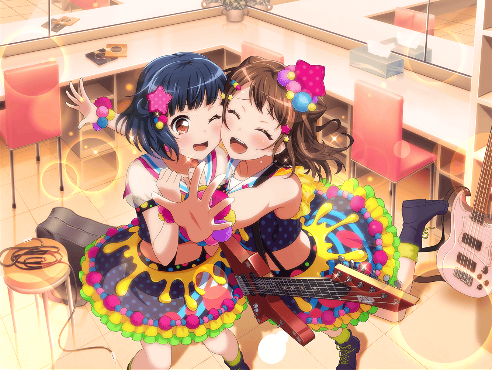

市ヶ谷家 蔵
香澄
それじゃあ、改めまして……
この前のライブ、ホンットーにお疲れさまでした～！
せーの！
一同
かんぱーいっ！
香澄
私、お菓子買ってきたから、みんな食べて！
ここに広げておくから
有咲
わ、ずいぶんと買い込んできたな
沙綾
私は、いつも通りパン持ってきたよ。
こっちも遠慮なく食べてね
りみ
やった！
やっぱりポピパの打ち上げは、
沙綾ちゃんちのパンがないと始まらないよね
たえ
私、バター持ってきたけど、つける？
りみ
うん！ おたえちゃん、ありがとう！
有咲
おたえ、お前……
わざわざ持参したのか……？
ていうか、りみもりみで普通に使ってるし……
香澄
この前のライブはホントに興奮したよね！！
私、家に帰ったら全然寝れなくなっちゃったもん
有咲
最後は結局、寝落ちしてたけどな？
沙綾
そう言えば、この前のチャットの『こんど、お』って、
あれはなんて送ろうとしてたの？
香澄
途中で寝ちゃって間違えて送信しちゃったんだと思う……
私も、全然わからないし
有咲
つーか香澄さー。
ちょっとはペース配分できるようになれよなー
香澄
え？ ペース配分？
有咲
だってこれからもっと曲が増えて、
ライブの時間だって長くなるかもしれないだろ？
有咲
いつも全力なのは香澄のいいところだと思うけど、
このままじゃ身体がもたなくなるかもしんねーぞ？
香澄
あ、有咲……
そんなに私のこと心配してくれてるの……っ！？
有咲
い、いや！
そういうわけじゃねーけど！
香澄
ありがとー、有咲！ 大好き～！
有咲
だ、抱きつくなってっ！
私はただ、ライブの途中で香澄が
ぶっ倒れちゃったら大変だって思っただけで……っ！
たえ
それ、香澄のこと心配してるんじゃないの？
有咲
だーかーらっ！
りみ
けど、ホントに有咲ちゃんの言う通りかもね？
絶対に手は抜いちゃダメだけど、ペース配分は必要かも
沙綾
うん！ 有咲の言う通りだよ。
香澄には、これからもっともっとたくさんの曲を
歌ってもらわないといけないしね
香澄
そっか……そうだよね。わかった！
私、頑張ってやってみるね、ペース配分。
だから有咲も、安心して！
有咲
……お、おう
香澄
それじゃあ、お腹も空いてきたし、
私、お菓子食べちゃおっかなー
有咲
あ、ちょっと待った。
さっきばあちゃんがピザ取っていいって言ってたぞ
香澄
ほ、ホントに！？
有咲
ばあちゃんからの差し入れだってさ
香澄
おばあちゃんありがとー！
やったー、ピザだー！
沙綾
あははっ。
ピザってなんかテンション上がるよね〜。
みんなでトッピング決めてみようか？
たえ
私はトマトがのってるやつがいい！
あと、ベーコン！ それから……
りみ
おたえちゃん、やる気まんまんだね……
私は、マッシュルームが好きかな……
有咲
アボカドも捨てがたいぞ？
アボカドはチーズとの相性抜群だからな
香澄
私は、ベーコンとサラミでしょ？
あ、あとは照り焼きチキンと、ハム！
有咲
肉ばっかかよ！
沙綾
それじゃあ、とりあえず注文まとめて
お店に連絡してみようか
香澄
さーや、おねがーい！
香澄
あー……ピザのこと考えてたら、
なんか余計にお腹が空いてきちゃった……
ピザが来るまでちょっとお菓子食べて待ってよ～
30分後
有咲
ほーら、お待ちかねのピザ届いたぞー
たえ
わあっ、いい匂い！
りみ
ホントだ～！
はい、お皿とおしぼり
沙綾
ありがと、りみりん。
それじゃあ、テーブルの真ん中に置いて～……
オープン！
有咲
お～！
チーズがとろけて……すっげーうまそ～……
ほら！ 香澄もこっち来いって……っ！
香澄
う、うん……
有咲
ん？ どうした、香澄？
テンション低いけど……
りみ
香澄ちゃん、
お菓子を食べすぎてお腹いっぱいなんだって……
香澄
絶対食べるから……
ちょ、ちょっと待ってて……っ！
有咲
だからお前はペース配分できるようになれってっ！